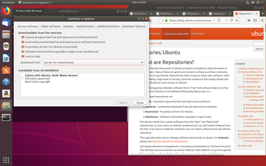
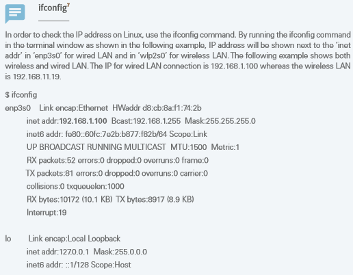
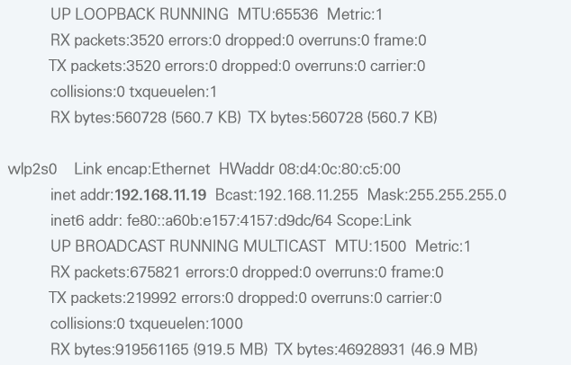
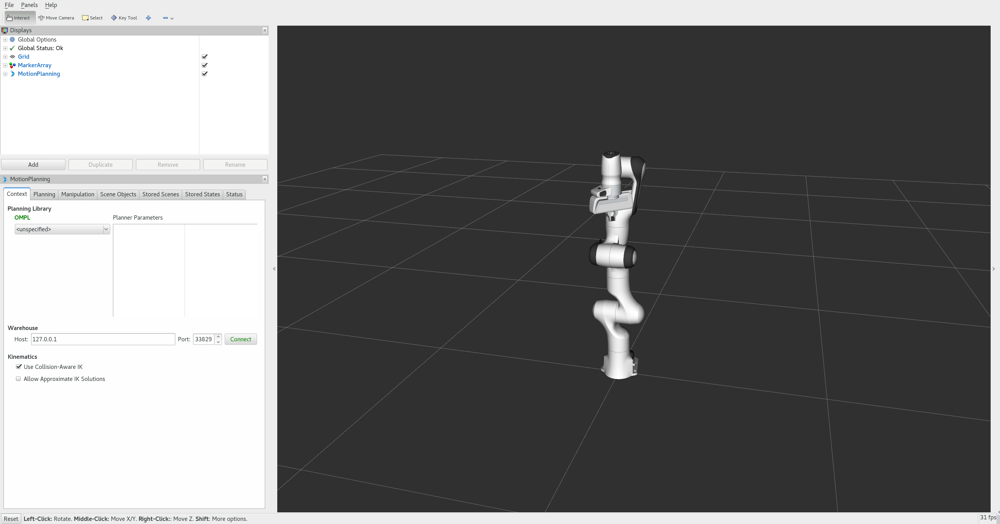

Hướng dẫn cài đặt¶
Cách 1: Cài đặt chung¶
Ghi chú
Khi dùng Ubuntu 16 bạn cài ROS bản Kinetic Kame, với Ubuntu 18 bạn cài bản ROS Melodic
Cài git
Để tải trực tiếp trong Linux, bạn sẽ cần cài đặt git. Mở terminal và cài đặt git như sau:
sudo apt-get install git
Chỉnh lại chuẩn US
Các bạn mở mục “software & updates” nhớ chọn như hình vẽ bên dưới và chỉnh server US
{kind=link}
Cài đặt 'chrony' và sau đó chỉ định máy chủ NTP bằng lệnh 'ntpdate':
sudo apt-get install -y chrony ntpdate sudo ntpdate -q ntp.ubuntu.com
Cài khóa công khai để tải các package trên kho lưu trữ của ROS:
sudo apt-key adv --keyserver hkp: //ha.pool.sks-keyservers.net: 80 --recv-key 421C365BD9FF1F717815A3895523BAEEB01FA116
Nâng cấp các package trong Ubuntu của bạn. Ở thời điểm hiện tại bạn hiểu package đơn giản là một folder trong windown:
sudo apt-get update && sudo apt-get upgrade -y
Bạn tiến hành cài ROS Kinetic Kame bản full:
sudo apt-get install ros-kinetic-desktop-full
Khởi tạo rosdep
Để sử dụng ROS bạn hãy chắc chắn khởi tạo rosdep. rosdep giúp ROS trở lên thân thiện với người dùng:
sudo rosdep init
rosdep update
Cài đặt rosinstall. Chương trình này cài đặt các gói khác nhau của ROS. Bạn hãy chắc chắn cài nó vì nó khá thường xuyên được dùng:
sudo apt-get install python-rosinstall
Cài đặt môi trường. Các biến môi trường như ROS_ROOT, ROS_PACKAGE_PATH...:
source /opt/ros/kinetic/setup.bash
OK vậy là bạn đã tương đối cài xong ROS. Bây giờ chúng ta cùng test thử với việc tạo catkin_workspace ở bước 10 nhé. Ghi nhớ catkin chỉ cần cài một lần trừ khi bạn xây dựng không gian làm việc mới nhé.
Tạo catin_workspace:
mkdir -p ~/catkin_ws/src cd ~/catkin_ws/src catkin_init_workspace
Bây giờ bạn đã có catkin_workspace chỉ chứa 2 mục bên trong là 'src' và ‘CMakeLists.txt’. Hãy build nó với lệnh 'catkin_make' nhé:
cd ~/catkin_ws/
catkin_make
Ghi chú
Khi bạn đã xây dựng xong mà không gặp lỗi, hãy chạy lệnh ‘ls'. Ngoài thư mục ‘src' được tạo bởi người dùng còn có các thư mục ‘build' và thư mục 'devel' là các tệp liên quan đến build cho hệ thống xây dựng catkin được lưu trong thư mục ‘build, và các tệp liên quan đến thực thi được lưu trong thư mục ‘devel':
ls
kết quả hiện lên sẽ gồm:
build devel src
cuối cùng thêm setting file associated vào hệ thống catkin build:
source ~/catkin_ws/devel/setup.bash
Nào cùng xem ROS của bạn đã cài thành công chưa với lệnh sau nhé:
roscore
{kind=link}
Nếu hiện như thế này là ok nhé các bạn. các bạn nhấn Ctrl+C để thoát.
Cách 2: cài đặt nhanh¶
Nếu bạn đang sử dụng là 16.04.x hoặc Linux Mint 18.x, tập lệnh sau sẽ cho phép bạn đơn giản hóa quy trình cài đặt ROS đã nói ở trên:
wget https://raw.githubusercontent.com/ROBOTIS-GIT/robotis_tools/master/install_ros_kinetic.sh
chmod 755 ./install_ros_kinetic.sh
bash ./install_ros_kinetic.sh
Cài đặt nhanh đã bao hàm cả cài đặt chung ở phía trên và cài đặt môi trường ở phía dưới.
Cài môi trường¶
Lệnh:
source /opt/ros/kinetic/setup.bash
source ~/catkin_ws/devel/setup.bash
luôn được nhập mỗi khi chúng ta mở một terminal mới Để tránh tác vụ lặp đi lặp lại này chúng ta sẽ cài đặt chúng cố định bằng việc sử dụng lệnh:
gedit ~/.bashrc
Chúng ta có thể cố định cấu hình mạng của ROS và tạo các lệnh nhanh với các lệnh thường được sử dụng. '.bashrc' chứa các cài đặt của chúng ta còn gedit làm trình soạn thảo văn bản mặc định để mở. Chú ý '.bashrc' chứa nhiều cài đặt quan trọng không thể sủa đổi bạn mở bằng gedit kéo xuống dưới thay thế xxx.xxx.xxx.xxx bằng địa chỉ IP của bạn và đóng gedit lại ngay. Để kiểm tra IP bạn kéo xuống phía dưới của tài liệu để làm theo hướng dẫn.
Giờ hãy làm theo hướng dẫn nhé
# Set ROS Kinetic:
source /opt/ros/kinetic/setup.bash
source ~/catkin_ws/devel/setup.bash
Lệnh này là cài đặt cấu hình cho các file của ROS.
# Set ROS Network:
export ROS_HOSTNAME=xxx.xxx.xxx.xxx
export ROS_MASTER_URI=http://${ROS_HOSTNAME}:11311
Khi chưa kết nối với robot thật bạn dùng localhost như sau nhé:
export ROS_HOSTNAME=localhost
export ROS_MASTER_URI=http://localhost:11311
Khi bạn cần sử dụng với robot thật bạn sẽ quay lại đây và chỉnh sửa lại cài đặt nhé. Ví dụ địa chỉ IP của bạn là ‘192.168.1.100’ bạn sẽ làm như sau
# Set ROS Network:
export ROS_HOSTNAME=192.168.1.100
export ROS_MASTER_URI=http://${ROS_HOSTNAME}:11311
Giờ tiếp tục nào
# Set ROS alias command:
alias cw='cd ~/catkin_ws'
alias cs='cd ~/catkin_ws/src'
alias cm='cd ~/catkin_ws && catkin_make'
Lệnh này là cài đặt lệnh nhanh nhé mọi người.
Update và lưu tất cả với lệnh sau:
source ~/.bashrc
Hướng dẫn tìm địa chỉ IP
 {kind=link}
{kind=link}
Cài Integrated Development Environment(IDE)¶
IDE:
- Là tích hợp môi trường phát triển
- Cung cấp môi trường phát triển để người dùng có thể thực hiện các tác vụ liên quan đến phát triển
chương trình: như mã hóa, gỡ lỗi, biên dịch, phân phối trong một chương trình.
- Hầu hết các nhà phát triển có ít nhất một vài IDE yêu thích của họ. ROS hỗ trợ nhiều IDE.
Các IDE được sử dụng phổ biến nhất là: Eclipse, CodeBlocks, Emacs, Vim, NetBeans, QtCreator9.
-Công cụ phù hợp nhất cho các tác vụ đơn giản sẽ là
Visual Studio Code và để phát triển giao diện GUI, đó sẽ là QtCreator.
-Phần sau đây chứa thông tin về cách định cấu hình môi trường phát triển ROS với QtCreator
sudo apt-get install qtcreator
Mở QtCreator chúng ta dùng lệnh:
qtcreator
Cài MoveIt¶
Có một cách cài đặt ROS bằng lệnh khá ngắn nhé các bạn:
rosdep update
sudo apt-get update
sudo apt-get dist-upgrade
Cài catkin:
sudo apt-get install ros-kinetic-catkin python-catkin-tools
Các lệnh này thời gian chạy cũng tương tự như thời gian chạy của những hướng dẫn trên. Khi chúng ta nhập một lệnh máy sẽ hướng dẫn chúng ta nhập những lệnh tiếp theo.
Cài MoveIt:
sudo apt install ros-kinetic-moveit
Giờ các bạn hãy làm theo hướng dẫn xem điều thú vị gì sẽ xảy ra nhé:
mkdir -p ~/ws_moveit/src
cd ~/ws_moveit/src
git clone -b kinetic-devel https://github.com/ros-planning/moveit_tutorials.git
git clone -b kinetic-devel https://github.com/ros-planning/panda_moveit_config.git
cd ~/ws_moveit/src
cd ~/ws_moveit
catkin config --extend /opt/ros/kinetic
catkin build
source ~/ws_moveit/devel/setup.bash
echo 'source ~/ws_moveit/devel/setup.bash' >> ~/.bashrc
roslaunch panda_moveit_config demo.launch rviz_tutorial:=true
{kind=link}
Bạn thấy một không gian cho robot của bạn như trên
Trong tab Hiển thị RViz, nhấn ADD:
Từ thư mục moveit_ros_visualization, hãy chọn MotionPlanning. Nhấn OK".
{kind=link}
Bạn sẽ thấy hình robot pan_da hiện ra. Qủa thật quá thú vị phải không các bạn.
{kind=link}
Những lệnh trên tôi sẽ giải thích chi tiết cho các bạn ở những phần sau. Giờ các bạn hãy thỏa sức mày mò để xem các chức năng trên RViz đi nào.